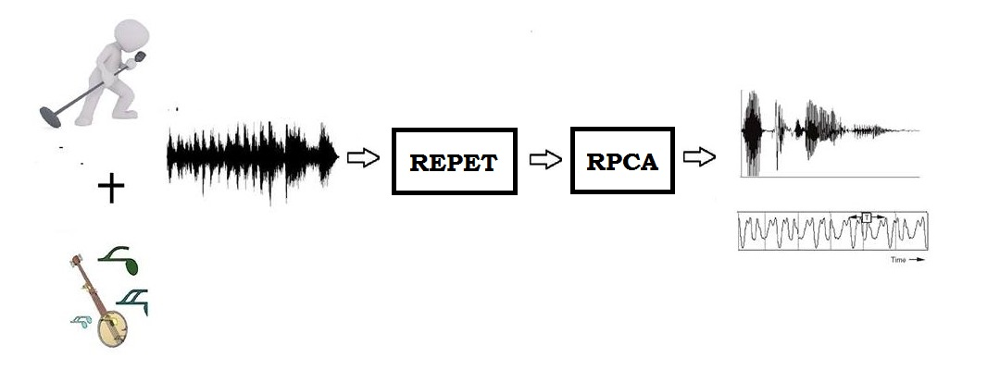

MUSIC AND VOICE SEPARATION
Audio Processing has grown in importance a lot lately, with more emphasis on extracting useful parts from audio samples. The focus of this project is on the separation of vocal and music elements from any given song sample. We draw our inspiration from Karaoke and various other music mixing applications. The project was completed under the guidance of Dr. Prithwijit Guha (Dept of EEE), IIT Guwahati by a team consisting of four students, and headed by me.
The project explores the techniques of RPCA and REPET for voice and background music separation and various musical features for the characterisation of vocals and music.
Any given audio sample can be viewed as a combination of two different matrices, one a low-rank matrix and another a sparse matrix. The low-rank matrix has periodic properties with noise while the sparse matrix has aperiodic properties. The sparse matrix corresponds to the voice signal and the low-rank matrix to the music signal.
We used .wav format audio files and passed it into the REPET classifier and then feed the result into the RPCA classifier to obtain the desired output.

REPET
The classifier converts the audio spectrogram matrix into a sparse matrix and a low-rank matrix using the nearest neighbor filter and then solves the corresponding constraint inequality using the Lagrangian method. The REPET gives out two separated files: 'music.wav' and 'vocal.wav' but the results obtained were distorted to an extent. The 'music.wav' was of good quality but there were distortions in the 'vocal.wav' file. To remove such errors, the results were then passed into the RPCA classifier.
RPCA
The RPCA first combines the two segments of the output to obtain the song.wav file back and then separates the audio into two matrices using the following procedure.
M is the combination of the vocal.wav and music.wav files from REPET.
M=L0+S0
where L0 is low-rank and S0 is sparseHere, both the components are of arbitrary magnitude. We do not know the low-dimensional column and row space of L0, not even their dimension. Similarly, we do not know the locations of the non-zero entries of S0, not even their number. The approach we use to solve the above condition is to consider S0 as noise (i.e. the amplitude as low) and if we stack all the data points as column vectors of a matrix M, the matrix should be low-rank approximately. Mathematically,
M=L0+N0
where L0 is low-rank and N0 is a small perturbation matrix.The Classical Principal Component Analysis seeks the best rank-k estimate of L0 by solving
Minimize ||M-L|| subject to rank (L) <=k
This constraint is solved using the Singular Decomposition (SVD) method.
The RPCA considerably improved the quality of the vocals. But, because RPCA enhanced the vocal parts in the music segment as well to improve the overall quality, we take the final output of Music from REPET and Vocal from RPCA for our Project.
Conclusion
There were slight distortions observed in the final outputs. We experimented by adding a Band-Pass filter at the end but it was eventually removed as it increased the distortions in the output. The final output of the project is 'vocal.wav' from RPCA and 'music.wav' from REPET.
Important Links:
- Input and output .wav files
- Github link for code
- Singing- Voice Separation from Monaural recording using Robust Principal Component Analysis
- Repeating Pattern Extraction Technique (REPET): A simple method for Music/Voice Separation
- Sparse Representations in Audio and Music: from Coding to Source Separation
- Sparse and Low-Rank Matrix Decomposition via Alternating Direction Methods
- A MATLAB Toolbox for Musical Feature Extraction from Audio
A project by Rajat Harlalka, B.Tech Pre-Final Year, IIT Guwahati